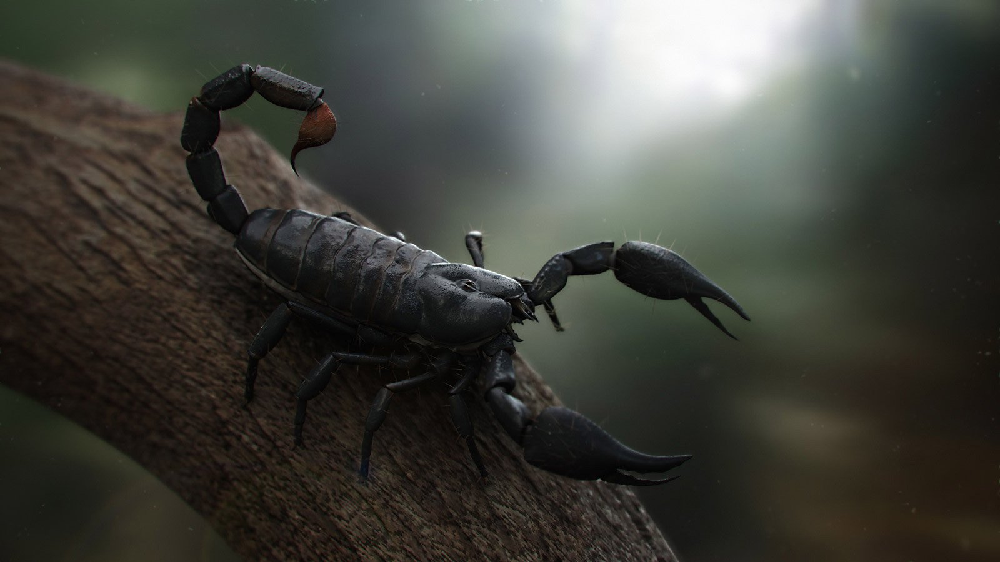

Scorpion
Most people know scorpions can inflict a painful sting, but not much else about the amazing arthropods. scorpions glow under ultraviolet light. A scorpion's cuticle, or skin, absorbs ultraviolet light and reflects it as visible light. This makes the work of scorpion researchers considerably easier.
Scorpions are arthropods that belong to the class Arachnida, the arachnids. The arachnids include spiders, harvestmen, ticks and mites.Most arthropods have relatively brief lives compared to other animals. Many insects live just weeks or months. Mayflies last just a few days. But scorpions are among the arthropods with the longest lifespans. In the wild, scorpions typically live from two to ten years. In captivity, scorpions have lived as long as 25 years.